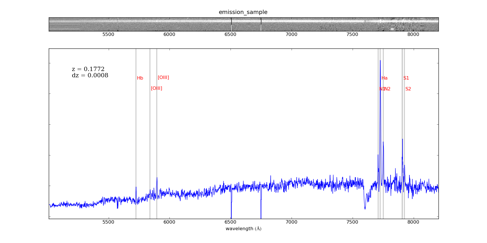

| Home | Research | Python Corner | Useful Links |
plotspec
Example 1:
Code used to generate:
plotspec fileroot=sample_em_ file1d=1d file2d=2d cz=53112.2 lheight=0.7
linefile=lines_sample_em.dat dv=250
figtitle=emission_sample
(c) Cristóbal Sifón
Last Updated April 10, 2013